Station Shift
Telefonlar için kısa vardiyalı bir istasyon ekibi oyunu.
Önce buzlar gitti, sonra kıyılar. Gri denizin altında ve bulutların üstünde Gelgit Direktörlüğü, birkaç mühürlü istasyonu erzak kartları ve üç nüshalık formlarla ayakta tutuyor; birinin de istasyonda nöbet tutması gerekiyor. 25 dakikalık tek bir vardiyan var: havayı içeride, suyu dışarıda tut ve evrakı mühürlü bırak; yanında, sana senin onlara ihtiyaç duyduğun kadar ihtiyaç duyan bir ekip var.
Station Shift nedir
Uzayda ya da denizin altında bir istasyondaki küçük bir ekibin üyesisin. Gövde incelir, kablolar bozulur, enerji santrali eskir ve biri gidip düzeltmedikçe hiçbir şey düzelmez. Herkes her şeyi yapabilir, ama her meslek kendi işini iki kat hızlı yapar; bu yüzden ekip, konuştuğunda en iyi sonucu alır.
Nasıl oynanır
- Uygulamayı aç, bir ad yaz ve bir meslek seç.
- Hazır'a (ya da Şimdi başlat'a) dokun. 4 kişi olunca kısa bir geri sayım vardiyayı başlatır.
- Yürümek için sol başparmağını kaydır; harekete geçmek için sağdaki turuncu düğmelere dokun.
- Bozulanı onar: gövdeyi yamala, kabloları tamir et, yaralıları tedavi et, elektriği açık tut. Telsizden konuş.
- Süre dolunca ekip devam etmek ya da mekikle eve dönmek için oy verir ve bir özet istasyonun nasıl olduğunu gösterir.
Kuralların tamamı Nasıl oynanır sayfasındadır.
Meslekler

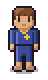
İstasyon Şefi
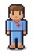
Sicil Memuru Nöbet Görevlisi
Nöbet Görevlisi
 Avukat
Avukat
 İstasyon Mühendisi
İstasyon Mühendisi
 Doktor
Doktor Bilim İnsanı
Bilim İnsanı
 Ambar Görevlisi
Ambar Görevlisi
 Botanikçi
Botanikçi
 Şef
Şef
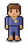
Barmen
 Madenci
Madenci
 Bakım Görevlisi
Bakım Görevlisi
 Manevi Danışman
Manevi Danışman
 Tayfa
Tayfa
İstasyonlar
Heron İstasyonu
Uzay istasyonu: güneş dizileri, yürünecek bir kafes kiriş, eve bir mekik.
Millrace İstasyonu
Derin istasyon: denizin altında üç küçük güverte, Köprüüstü'nden deniz tabanındaki türbinlere kadar.
Cairn İstasyonu
Kutup istasyonu: buzun üstünde iki küçük güverte, sıcak odalar, iki Hava Kilidi ve dışarıdaki soğuk.
Yenilikler
Sürüm notları geliştiricinin kendi notlarıdır ve İngilizce kalır.
- 0.63.0 container stacks, pen skins, lab coat and stethoscope, floors F1-F2, Battery and Inverter rooms
- 0.62.0 handcuffs and pulling people, Janitor puddles and bulbs, Miner and refinery, floors F0, tidy hub, smaller Bar and Kitchen, stars beyond the map edge
- 0.61.0 underwater U0-U1: Benthos Station, water in rooms, flooding and Drain
- 0.60.0 late join through the arrival shuttle, Ready only in the lobby, divided Captain's office, office paperwork (paper, fax, file cabinet)
- 0.59.0 crates and the cargo cart, cell property lockers and timers, one-way doors
- 0.58.0 Captain and HoP quarters, door lanes, panels in tunnels, L-shaped Atmospherics, harsher radiation from the warning, slower hunger, wrapped HUD text
- 0.57.0 eleven crops, plant care in Botanics, sixteen dishes
- 0.56.0 radiation belt event, tunnel doors open to everyone with an orange blink
Galeri


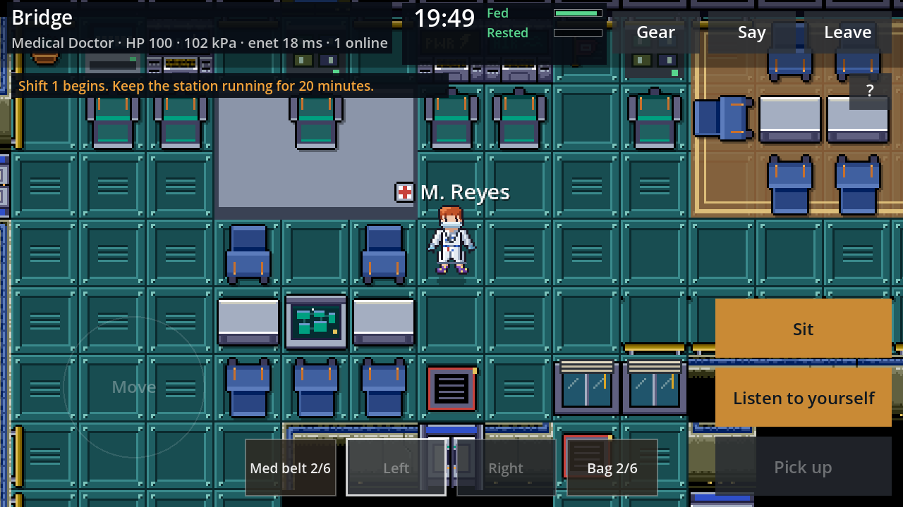


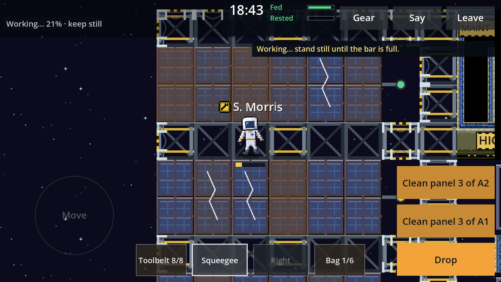

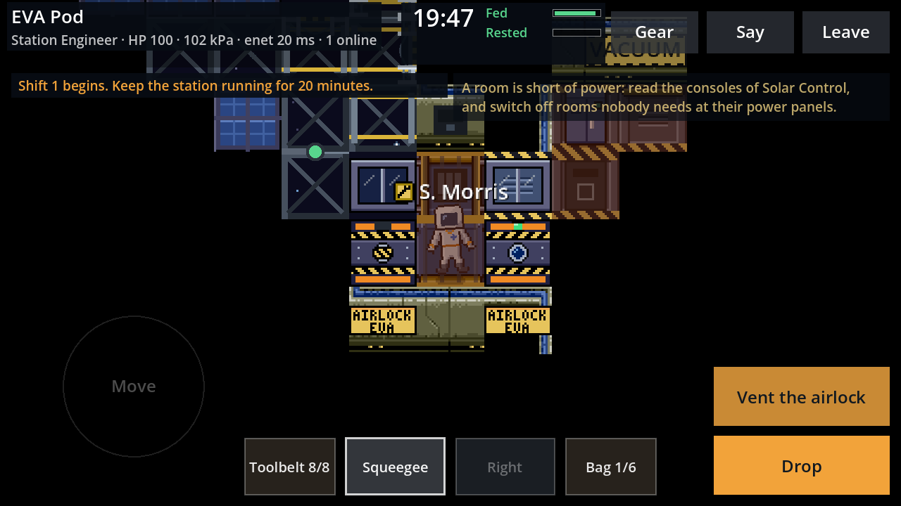

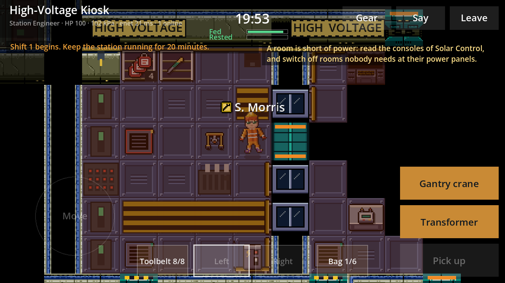

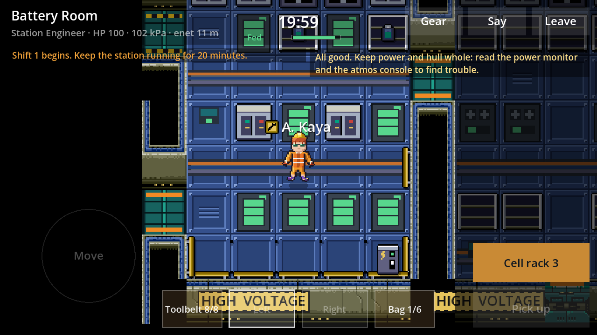


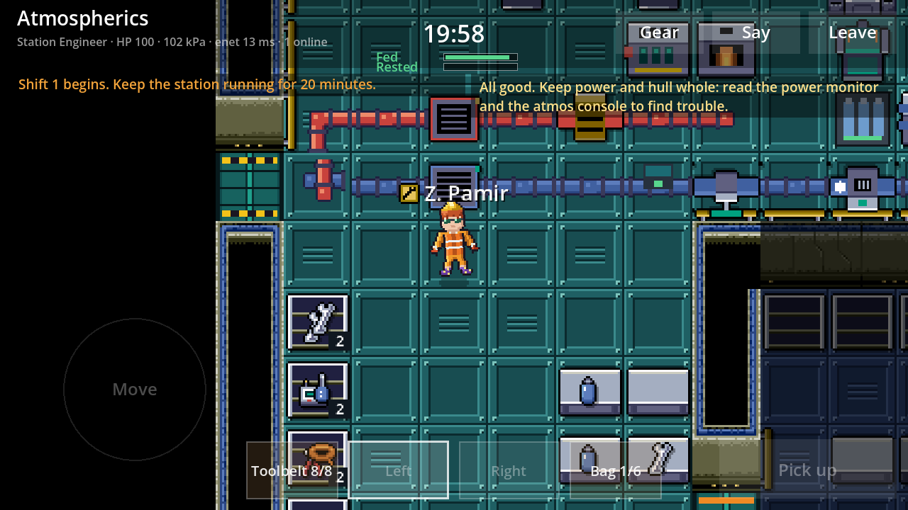


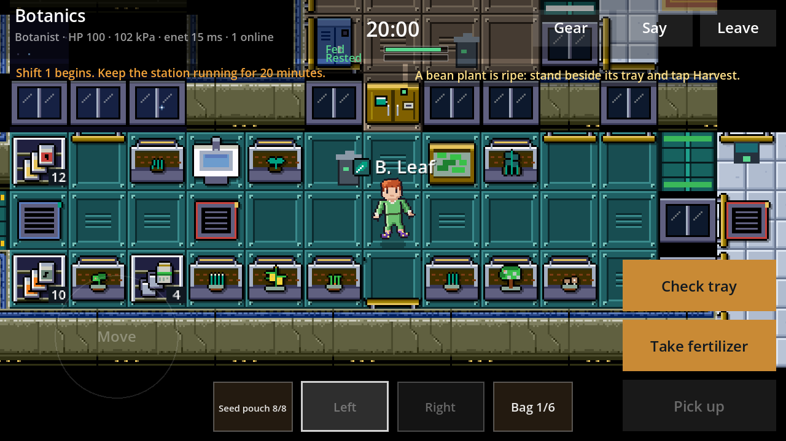


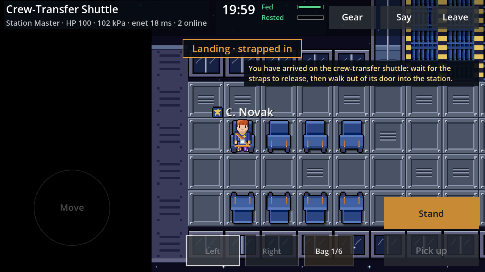


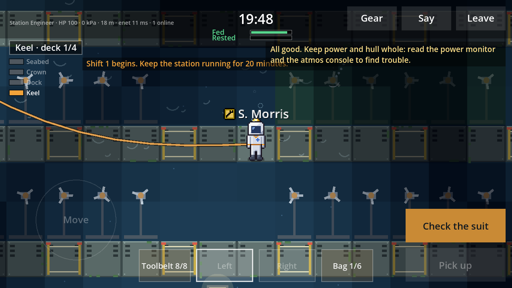
Şu an nerede
Station Shift erken bir prototiptir, sürüm 0.83.0. Küçük testlerde, yüz yüze, TestFlight ile davet edilen iPhone'larda ve aynı odadaki bir bilgisayarda çalışan bir oyun sunucusuyla oynanıyor. Henüz App Store'da değil.
Dünya
Buzlar eridi ve deniz, kıyı şehirleri birer harita ve söylentiye dönene kadar yükseldi. Dünyanın çoğunu kaplayan gri denize Gri Su deniyor; geriye kalanlar, Gelgit Direktörlüğü'nün mühürlü istasyonlarında yaşıyor. Direktörlük; erzak kartları, görev atamaları ve istasyon yasasını çıkaran sade bir bürokrasi. Ekip gemide, çünkü birinin olması gerekiyor.
Bu wiki
Burada Ana sayfa, Emeği geçenler, Gizlilik ve Destek dışındaki her sayfayı oyunun kendisi üretir; oyunun çalıştığı kurallar, resimler ve haritalarla, böylece her zaman 0.83.0 sürümünü anlatır. Kimin neyi yaptığı için Emeği geçenler sayfasına bak.